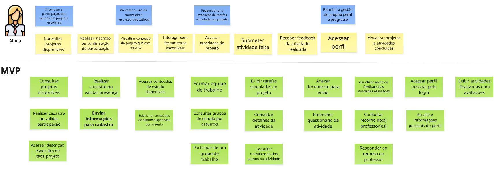
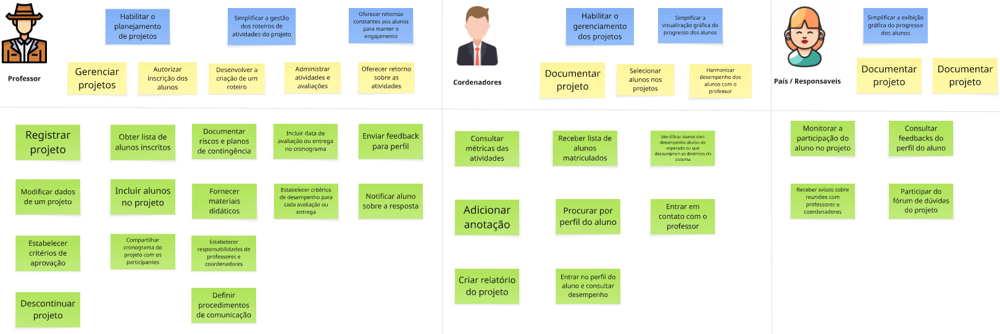

User Story Mapping - EduConnect¶
Adotamos o método de Mapeamento de Histórias de Usuário para estruturar as demandas da EduConnect, uma solução digital criada para otimizar a criação, o controle e a análise de iniciativas pedagógicas integradas, além de possibilitar o acompanhamento de ações extracurriculares no ambiente escolar.
Prints
 
👥 Personas¶
| ID | Persona |
|---|---|
| Us01 | Professor |
| Us02 | Coordenador |
| Us03 | Pais / Responsáveis |
| Us04 | Aluno |
📌 Atividades e Responsáveis¶
| Atividade | ID | Responsáveis |
|---|---|---|
| Gerenciar projetos | At01 | Professor |
| Documentar projeto | At02 | Coordenador, Pais |
| Monitorar participação do aluno | At03 | Pais |
| Enviar feedback para perfil | At04 | Professor |
| Adicionar anotação | At05 | Coordenador |
🧱 Backbone e Atividades Associadas¶
| ID | Backbone | Atividade Associada |
|---|---|---|
| Bb01 | Gerenciar projetos | At01 |
| Bb02 | Documentar projeto | At02 |
| Bb03 | Monitorar participação do aluno | At03 |
| Bb04 | Enviar feedback para perfil | At04 |
| Bb05 | Adicionar anotação | At05 |
MVP - Mínimo Produto Viável¶
| Tarefa | Descrição | Backbone |
|---|---|---|
| T01 | Criar novo projeto | Bb01 |
| T02 | Definir objetivos pedagógicos | Bb01 |
| T03 | Estimar recursos necessários | Bb01 |
| T04 | Criar cronograma | Bb02 |
| T05 | Definir papéis e responsabilidades | Bb02 |
| T06 | Cadastrar critérios de avaliação | Bb02 |
| T07 | Agendar reuniões de apresentação | Bb03 |
| T08 | Enviar comunicados | Bb03 |
| T09 | Cadastrar alunos no projeto | Bb04 |
| T10 | Armazenar autorizações dos responsáveis | Bb04 |
| T11 | Registrar andamento das atividades | Bb05 |
| T12 | Marcar tarefas como concluídas | Bb05 |
| T13 | Visualizar status do projeto | Bb05 |
| T14 | Controlar materiais e recursos | Bb06 |
| T15 | Atribuir tarefas aos professores | Bb06 |
| T16 | Inserir evidências de aprendizagem | Bb07 |
| T17 | Gerar relatórios de progresso | Bb07 |
| T18 | Publicar atualizações e avisos | Bb08 |
| T19 | Permitir comentários nos projetos | Bb08 |
📋 Detalhamento por Backbone¶
🔹 Bb01 – Gerenciar projetos¶
- Registrar projeto
- Modificar dados de um projeto
- Incluir alunos no projeto
- Fornecer materiais didáticos
- Definir procedimentos de comunicação
🔹 Bb02 – Planejamento Detalhado¶
- Criar cronograma: criar cronograma com marcos e datas editáveis.
- Definir papéis e responsabilidades: atribuir papéis à equipe e notificar os membros.
- Cadastrar critérios de avaliação: associar critérios às atividades do projeto.
🔹 Bb03 – Divulgação e Alinhamento¶
- Enviar comunicados: gerar e personalizar comunicados para diferentes públicos.
- Agendar reuniões de apresentação: agendar reuniões informativas e registrar a realização.
🔹 Bb04 – Cadastro e Autorização¶
- Cadastrar alunos no projeto: incluir alunos com dados básicos e associá-los ao projeto.
- Armazenar autorizações: anexar digitalmente autorizações dos responsáveis.
🔹 Bb05 – Execução e Acompanhamento¶
- Registrar andamento das atividades: marcar progresso das tarefas e atualizar status.
- Marcar tarefas como concluídas: permitir encerramento de atividades e inserção de observações.
- Visualizar status do projeto: visão consolidada do progresso do projeto.
🔹 Bb06 – Gestão de Recursos e Equipe¶
- Controlar materiais e recursos: registrar uso por etapa e alertar para limites de estoque.
- Atribuir tarefas aos professores: distribuir atividades e disponibilizar visualização pessoal.
🔹 Bb07 – Avaliação e Resultados¶
- Inserir evidências de aprendizagem: anexar documentos, fotos ou vídeos organizados por aluno e atividade.
- Gerar relatórios de progresso: relatórios por aluno, grupo e projeto com base nas evidências.
🔹 Bb08 – Comunicação Contínua¶
- Publicar atualizações e avisos: coordenadores publicam em mural acessível com anexos e menções.
- Permitir comentários nos projetos: comentários nas atividades com controle de visibilidade e notificações.
Bibliografia:
PATTON, Jeff. User Story Mapping: Discover the Whole Story, Build the Right Product. Sebastopol: O'Reilly Media, 2014.